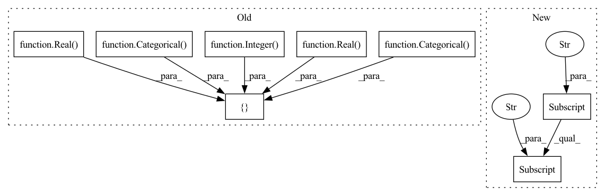

Pattern ID :39019

Before Change
def model_LinearSVC(self, **kwargs):
// https://scikit-learn.org/stable/modules/generated/sklearn.svm.LinearSVC.html
self.path = "sklearn.svm.LinearSVC"
self.param_space = [
Categorical(categories=[True, False], name="dual"),
Real(low=1.0, high=5.0, name="C", num_samples=10),
Integer(low=100, high=1000, name="max_iter", num_samples=self.num_samples),
Real(low=1e-5, high=1e-1, name="tol", num_samples=10),
Categorical(categories=[True, False], name="fit_intercept")
]
self.x0 = [True, 1.0, 100, 1e-4, True]
return {"model": {"LinearSVC": kwargs}}
After Change
// https://scikit-learn.org/stable/modules/generated/sklearn.svm.LinearSVC.html
self.path = "sklearn.svm.LinearSVC"
self.param_space = self.classification_space["LinearSVC"]["param_space"]
self.x0 = self.classification_space["LinearSVC"]["x0"]
return {"model": {"LinearSVC": kwargs}}
In pattern: SUPERPATTERN
Frequency: 10
Non-data size: 8
Instances
Fragment ID: 111166624
Project Name: atrcheema/ai4water
Commit Name: ca2248db7a870da6289143d5fc5a0521b33a2a12
Time: 2021-11-29
Author: sara.rwpk@gmail.com
File Name: ai4water/experiments/_classification.py
M Class Name: MLClassificationExperiments
N Class Name: MLClassificationExperiments
M Method Name: model_LinearSVC(1)
N Method Name: model_LinearSVC(1)
M Parent Class: Experiments
N Parent Class: Experiments
M File Name: ai4water/experiments/_classification.py
N File Name: ai4water/experiments/_classification.py
M Start Line: 234
M End Line: 241
N Start Line: 199
N End Line: 200
'>
Before Change
def model_BaggingRegressor(self, **kwargs):
self.path = "sklearn.ensemble.BaggingRegressor"
self.param_space = [
Integer(low=5, high=50, name="n_estimators", num_samples=self.num_samples),
Real(low=0.1, high=1.0, name="max_samples", num_samples=self.num_samples),
Real(low=0.1, high=1.0, name="max_features", num_samples=self.num_samples),
Categorical(categories=[True, False], name="bootstrap"),
Categorical(categories=[True, False], name="bootstrap_features"),
// Categorical(categories=[True, False], name="oob_score"), // linked with bootstrap
]
self.x0 = [10, 1.0, 1.0, True, False]
After Change
self.path = "sklearn.ensemble.BaggingRegressor"
self.param_space = self.regression_space["BaggingRegressor"]["param_space"]
self.x0 = self.regression_space["BaggingRegressor"]["x0"]
return {"model": {"BaggingRegressor": kwargs}}
def model_BayesianRidge(self, **kwargs):
'>
Fragment ID: 111166625
Project Name: atrcheema/ai4water
Commit Name: ca2248db7a870da6289143d5fc5a0521b33a2a12
Time: 2021-11-29
Author: sara.rwpk@gmail.com
File Name: ai4water/experiments/_regression.py
M Class Name: MLRegressionExperiments
N Class Name: MLRegressionExperiments
M Method Name: model_BaggingRegressor(1)
N Method Name: model_BaggingRegressor(1)
M Parent Class: Experiments
N Parent Class: Experiments
M File Name: ai4water/experiments/_regression.py
N File Name: ai4water/experiments/_regression.py
M Start Line: 208
M End Line: 216
N Start Line: 202
N End Line: 203
'>
Before Change
def model_SGDClassifier(self, **kwargs):
// https://scikit-learn.org/stable/modules/generated/sklearn.linear_model.SGDClassifier.html
self.path = "sklearn.linear_model.SGDClassifier"
self.param_space = [
Categorical(categories=["l1", "l2", "elasticnet"], name="penalty"),
Real(low=1e-6, high=1e-2, name="alpha", num_samples=self.num_samples),
Real(low=0.0, high=1.0, name="eta0", num_samples=self.num_samples),
Categorical(categories=[True, False], name="fit_intercept"),
Integer(low=500, high=5000, name="max_iter", num_samples=self.num_samples),
Categorical(categories=["constant", "optimal", "invscaling", "adaptive"], name="learning_rate")
]
self.x0 = ["l2", 1e-4, 0.5,True, 1000, "invscaling"]
return {"model": {"SGDClassifier": kwargs}}
After Change
self.path = "sklearn.linear_model.SGDClassifier"
self.param_space = self.classification_space["SGDClassifier"]["param_space"]
self.x0 = self.classification_space["SGDClassifier"]["x0"]
return {"model": {"SGDClassifier": kwargs}}
def model_SVC(self, **kwargs):
'>
Fragment ID: 111166627
Project Name: atrcheema/dl4seq
Commit Name: ca2248db7a870da6289143d5fc5a0521b33a2a12
Time: 2021-11-29
Author: sara.rwpk@gmail.com
File Name: ai4water/experiments/_classification.py
M Class Name: MLClassificationExperiments
N Class Name: MLClassificationExperiments
M Method Name: model_SGDClassifier(1)
N Method Name: model_SGDClassifier(1)
M Parent Class: Experiments
N Parent Class: Experiments
M File Name: ai4water/experiments/_classification.py
N File Name: ai4water/experiments/_classification.py
M Start Line: 355
M End Line: 363
N Start Line: 289
N End Line: 290
'>
Before Change
def model_BaggingClassifier(self, **kwargs):
// https://scikit-learn.org/stable/modules/generated/sklearn.ensemble.BaggingClassifier.html
self.path = "sklearn.ensemble.BaggingClassifier"
self.param_space = [
Integer(low=5, high=50, name="n_estimators", num_samples=self.num_samples),
Real(low=0.1, high=1.0, name="max_samples", num_samples=self.num_samples),
Real(low=0.1, high=1.0, name="max_features", num_samples=self.num_samples),
Categorical(categories=[True, False], name="bootstrap"),
Categorical(categories=[True, False], name="bootstrap_features")
// Categorical(categories=[True, False], name="oob_score"), // linked with bootstrap
]
self.x0 = [10, 1.0, 1.0, True, False]
return {"model": {"BaggingClassifier": kwargs}}
After Change
// https://scikit-learn.org/stable/modules/generated/sklearn.ensemble.BaggingClassifier.html
self.path = "sklearn.ensemble.BaggingClassifier"
self.param_space = self.classification_space["BaggingClassifier"]["param_space"]
self.x0 = self.classification_space["BaggingClassifier"]["x0"]
return {"model": {"BaggingClassifier": kwargs}}
'>
Fragment ID: 111166637
Project Name: atrcheema/dl4seq
Commit Name: ca2248db7a870da6289143d5fc5a0521b33a2a12
Time: 2021-11-29
Author: sara.rwpk@gmail.com
File Name: ai4water/experiments/_classification.py
M Class Name: MLClassificationExperiments
N Class Name: MLClassificationExperiments
M Method Name: model_BaggingClassifier(1)
N Method Name: model_BaggingClassifier(1)
M Parent Class: Experiments
N Parent Class: Experiments
M File Name: ai4water/experiments/_classification.py
N File Name: ai4water/experiments/_classification.py
M Start Line: 86
M End Line: 94
N Start Line: 88
N End Line: 89
'>
Before Change
def model_LogisticRegression(self, **kwargs):
// https://scikit-learn.org/stable/modules/generated/sklearn.linear_model.LogisticRegression.html
self.path = "sklearn.linear_model.LogisticRegression"
self.param_space = [
Categorical(categories=[True, False], name="dual"),
Real(low=1e-5, high=1e-1, name="tol", num_samples=self.num_samples),
Real(low=0.5, high=5.0, name="C", num_samples=self.num_samples),
Categorical(categories=[True, False], name="fit_intercept"),
Integer(low=100, high=1000, name="max_iter", num_samples=10)
//Categorical(categories=["newton-cg", "lbfgs", "liblinear", "sag", "saga"], name="solver")
]
self.x0 = [True,1e-6, 1.0, True, 100]
return {"model": {"LogisticRegression": kwargs}}
After Change
self.path = "sklearn.linear_model.LogisticRegression"
self.param_space = self.classification_space["LogisticRegression"]["param_space"]
self.x0 = self.classification_space["LogisticRegression"]["x0"]
return {"model": {"LogisticRegression": kwargs}}
def model_NearestCentroid(self, **kwargs):
'>
Fragment ID: 111166655
Project Name: atrcheema/ai4water
Commit Name: ca2248db7a870da6289143d5fc5a0521b33a2a12
Time: 2021-11-29
Author: sara.rwpk@gmail.com
File Name: ai4water/experiments/_classification.py
M Class Name: MLClassificationExperiments
N Class Name: MLClassificationExperiments
M Method Name: model_LogisticRegression(1)
N Method Name: model_LogisticRegression(1)
M Parent Class: Experiments
N Parent Class: Experiments
M File Name: ai4water/experiments/_classification.py
N File Name: ai4water/experiments/_classification.py
M Start Line: 247
M End Line: 255
N Start Line: 208
N End Line: 209